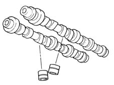
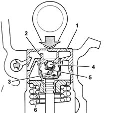
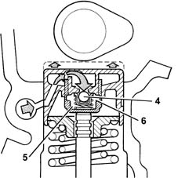

1036G camshaft (1) in top heads (2)
- Path
- Descriptions > 10 ENGINE UNIT > 1036 TIMING SYSTEM > 1036G camshaft (1) in top heads (2)
- Kind
- system description
- Applies to
- engines: 1.6 16v; all production periods
- Interactive page
- https://sloeber94.github.io/elrnDB-fMltpl/en/#/2888223
Applies to: engines: 1.6 16v; all production periods
CAMSHAFTS (PETROL/BI-FUEL)
Two overhead camshaft, made from spheroid cast iron, operated by a toothed belt.
CAMSHAFTS (METHANE)
The same construction specifications as described above, with a special cam profile for methane operation.

HYDRAULIC TAPPETS
The hydraulic tappets automatically cancel the valve clearance during engine operation, with the advantage of reducing:
- maintenance interventions
- engine noise.
Operation in open stage
When the camshaft cam acts on the cup (1) and consequently the piston (2), the oil trapped in the chamber (6), because the ball valve (4) closes, transmits the movement of the piston (2) directly to the sleeve (3) and so to the valve. During this stage, because of the high pressure to which it is subjected, some of the oil in the chamber (6) leaks through the tiny gap between the piston (2) and sleeve (3).

Operation in closed stage
While the valve is closed, so that the tappet, pushed by the action of the spring (5), follows the profile of the cam, a vacuum is created inside the chamber (6) which causes the ball valve (4) to open, allowing oil to enter. The oil entering the chamber (6) replaces the oil which leaked out previously while the valve was open.

Applies to: engines: 1.6 16v; all production periods; only with equipment: BIPOWER
Two overhead camshaft, made from spheroid cast iron, operated by a toothed belt.
Applies to: engines: 1.6 16v; all production periods; only with equipment: BLUPOWER
The same construction specifications as described above, with a special cam profile for methane operation. As a result the fitting between the axis and the pulley varies in order not to lead to modifications in the timing procedure.